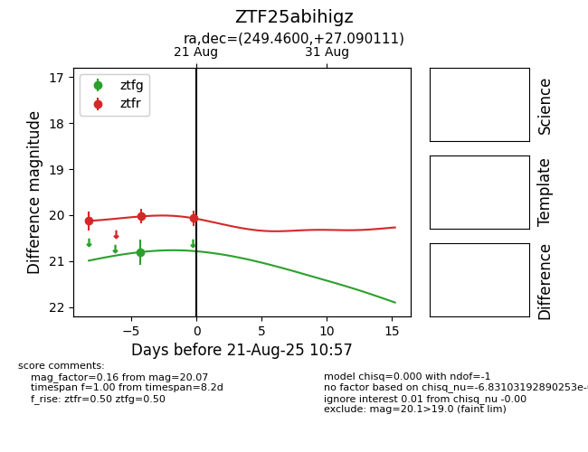

Target ZTF25abihigz at 2025-08-21 10:57, see:
FINK: fink-portal.org/ZTF25abihigz
Lasair: lasair-ztf.lsst.ac.uk/objects/ZTF25abihigz
ALeRCE: alerce.online/object/ZTF25abihigz
alt names
ZTF25abihigz (ztf,alerce)
coordinates:
equatorial (ra, dec) = (249.4600,+27.09011)
galactic (l, b) = (46.6782,+40.07711)
photometry
last ztfg=20.80, ztfr=20.07
1 ztfg, 3 ztfr detections
